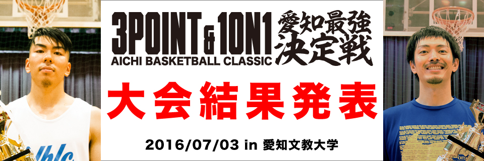

Main Contents
Event List
Result

2016/7/3 [ 1on1＆3Pコンテスト 愛知最強決定戦 ] 大会結果

2016/7/3 [ 1on1＆3Pコンテスト 愛知最強決定戦 ] 大会結果
Aichi（愛知）Basketball（バスケットボール）Classic（最上級・一流）の頭文字を繋ぎ合わせ、文字通り愛知におけるバスケットボール競技 のカテゴリー「3on3」「1on1」「3P」「5on5」において最強チャンピオンチーム・選手を決定するべく誕生しました！
上記の愛知で開催されている3on3大会の主催者が共同で開催する大会で運営しております。
各カテゴリーの上位者が2016年7月3日(日)に行われる
Aichi Basketball Classic「1on1＆3Pコンテスト」決定戦
への本戦出場となります。
試合進行中は、審判員がルール上すべての裁量を有し、審判員の判断が最優先される。
また、主審その他すべての審判員に対する不順な言動、乱暴な言動は退場。
以下に明記されていないルールについては、“バスケットボール競技規則”に準ずる。
年間チャンピオンを目指す一般クラス(以下、一般)と、エンジョイクラス(以下、エンジョイ)の2クラスでそれぞれのチーム編成とする。
4チーム毎のブロックに分かれ、ブロック内での予選リーグを実施。
各ブロック1位2位チームならびにワイルドカードの4チームを合計した16チームが決勝トーナメントに進出。
3チーム毎、2ブロックに分かれ、ブロック内での予選リーグを実施。
決勝戦は各ブロック1位 2位 3位同士で戦い、最終順位を決定します。
メンバー数は、1チーム4人以上とする。
登録以外のプレイヤー出場及び他チームの掛け持ち登録は認めない。
掛け持ちで出場が発覚した時点でそのプレイヤーは当日出場停止。
横 15ｍ、縦 12ｍとする。
大会中は”スリー・ポイント・ライン”を”ツー・ポイント・ライン”と称する。
ツー・ポイント・ラインの内側からのショットによるゴールは1点
ツー・ポイント・ラインの外側からのショットによるゴールは2点
女性のゴールは全て” 2倍 ”とする。
バスケットボール競技規則で定められた皮の7号ボールを使用する。
試合前にじゃんけんを行い勝ったチームの攻撃からスタートする。
前の試合が終了してから次の試合開始1分前までウォーム・アップすることができる。
前半4分、後半4分で終了とする。
前半終了後、30秒のハーフ・タイムを設ける。
ショット・クロックは”12 秒”とする。
前後半終了30秒前を正式タイムとする。
正式タイムまではランニング・タイムとする。
ランニング・タイム中は、ゴール・イン後、交替などでタイマーは停止しない。
※審判員がタイマー停止を申告した場合は除く。
どちらかのチームの得点が21点になった時点でノックアウト（試合終了）とし、21点を取ったチームの勝利とする。
※延長戦の場合は適用しない。
試合終了後、同点の場合以下の通りとする。
延長戦はなく同点終了とする。
時間無制限の延長戦を行い、どちらかのチームが3点先取するまで試合をおこなう。
3点先取した時点で「先行後攻を問わず」試合終了とする。
後半終了時点で再び“じゃんけん”をし、勝者が最初の攻撃チームとする。
※ノックアウト（コールド試合）は適用しない。
タイム・アウトは取れない。
タイム・アウトは前後半通して両チーム1回（30秒）取れる。
試合に出ているプレイヤーならびにチーム関係者が申告できる。
審判員に申告して、審判員が許可した時に取れる。
ショット・クロックは継続で試合を再開する。
攻守交替となり、守っていたチームが試合を再開させる。
新たに攻撃側になったチームは、スタートラインからチェックボールで再開とする。
※チェックボールを行い、攻撃側がボールを保持した時点でショット・クロックはスタートする。
※この際、新たに守備側になったチームはツー・ポイント・ラインを超えたり、ディフェンス行為をしてはいけない。
※この際、攻撃側・守備側の双方共に、明らかにボールを遅く渡すなどの遅延行為はテクニカル・ファウルの対象とする。
ドリブルあるいはパスでボールを保持したプレイヤーがツー・ポイント・ラインの外に出た時に攻撃権の変更とする。
※ツー・ポイント・ラインの外に出る前に「ショットを行った時点」でヴァイオレイションとする。
※攻撃権の変更までに再度スティールやパスカットなどでボールを奪った場合は攻撃継続となり、ツー・ポイント・ラインの外に出なくてもよい。
攻守交替となり、チェックボールで再開する。
攻守交替となり、チェックボールで再開する。
◆ チェックボール
コート内のツー・ポイント・ライン外側の頂点付近で審判員が守備側にボールを渡し、ボールを受け取ったプレイヤーが攻撃側になるチームのプレイヤーにボールをトスして渡すこと。
◆ ツー・ポイント・ラインの外にいるプレイヤーの規定
左右どちらの足もツー・ポイント・ラインの内側についていない状態とする。
チームファウルは前半・後半共に3つまでとし、4つ目から相手チームに1点加算し、攻撃権継続とする。
※ 決勝トーナメントの延長戦の場合、チームファウルは後半終了時を継続する。
・ツー・ポイントラインの内側からのショットは1点加算し、攻撃権継続とする。
・ツー・ポイントラインの外側からのショットは2点加算し、攻撃権継続とする。
・ツー・ポイントラインの内側からのショットは1点 + フリー・スロー1本分の1点を加算し、攻撃権継続とする。
・ツー・ポイントラインの外側からのショットは2点 + フリー・スロー1本分の1点を加算し、攻撃権継続とする。
女性へのファウルに対してはチームファウル数・女性同士などを問わず、全て+1点を与える。
フリー・スロー1本分の1点を加算、攻撃権継続とする。
シュート中のファウルと同様の対応とする。
接触していない時に故意に倒れるなど、審判員に対して虚偽のアピールをした場合は以下の規定とする。
・該当プレイヤーに厳重注意をする。
・それでもおこなった場合はテクニカル・ファウルとする。
以下のタイミングでプレイヤーの交替を可能とする。
・試合をトップからチェックボールで再開するとき
・アウト・オブ・バウンズや12秒経過のヴァイオレイション後、試合が再開する間
・審判員が試合を止め、試合が再開する間
審判員、オフィシャルにプレイヤー交替の申告は必要なし。
交替に時間を掛けている時や、4人以上プレイヤーがコートにいる場合などは、審判裁定によりテクニカル・ファウルの対象となる。
勝ち点は、勝利チーム勝ち点3、引き分け1、負け0とする。
順位は勝ち点の多い順とし、勝ち点が同じ場合、得失点差により順位を決定する。それでも同じ場合は総得点数により決定する。
これらすべてが同点の場合はフリー・スローを行い、サドンデス方式にて勝敗を決定する。
大会を通し、事務局が行う。
大会を通し、2人制を導入します。
※ 大会によっては1人制の場合もあり。
試合進行中は、審判員がルール上すべての裁量を有し、審判員の判断が最優先される。
また、主審その他すべての審判員に対する不順な言動、乱暴な言動は退場。
以下に明記されていないルールについては、“バスケットボール競技規則”に準ずる。
試合前にじゃんけんを行い、勝ったプレイヤーの攻撃からスタートする。
前の試合が終了してから次の試合開始 1 分前までウォーム・アップすることができる。
3 分で終了とする。
ショット・クロックは 14 秒とする。
試合終了 30 秒前から正式タイムとする。
正式タイムまではランニング・タイムとする。
タイマーが停止するタイミングは以下の通りとする。
フリー・スローを含むファウルが起こり、フリー・スローが終わるまで
審判がタイマー停止を指示した場合
ヴァイオレイション後、チェックボールが終わるまで
フリー・スローを含むファウル後、フリー・スローが終わるまで
審判がタイマー停止を指示した場合
スリー・ポイント・ラインの内側からのショットによるゴールは2点とする。
スリー・ポイント・ラインの外側からのショットによるゴールは3点とする。
試合終了後、同点の場合以下の通りとする。
・時間無制限の延長戦を行い、どちらかのプレイヤーが3点先取するまで試合をおこなう。
・3点先取した時点で「先行後攻を問わず」試合終了とする。
・後半終了時点で再び“じゃんけん”をし、勝者が最初の攻撃プレイヤーとする。
どちらかのプレイヤーの得点が21点以上になった時点でノックアウト（試合終了）とし、21点以上を取ったプレイヤーの勝利とする。
※延長戦の場合は適用しない。
攻守交替となり、守っていたプレイヤーが試合を再開させる。
新たに攻撃側になったプレイヤーは、スタートラインからチェックボールで再開とする。
※チェックボールを行い、攻撃側がボールを保持した時点でショット・クロックはスタートする。
※この際、新たに守備側になったプレイヤーはスリー・ポイント・ラインを超えたり、ディフェンス行為をしてはいけない。
※この際、攻撃側・守備側の双方共に、明らかにボールを遅く渡すなどの遅延行為はテクニカル・ファウルの対象とする。
ドリブルあるいはボールを保持したプレイヤーがスリー・ポイント・ラインの外に出た時に攻撃権の変更とする。
※スリー・ポイント・ラインの外に出る前に「ショットを行った時点」でヴァイオレイションとする。
※攻撃権の変更までに再度スティールなどでボールを奪った場合は攻撃継続となり、スリー・ポイント・ラインの外に出なくてもよい。
攻守交替となり、スタートラインからチェックボールで再開する。
攻守交替となり、スタートラインからチェックボールで再開する。
◆ チェックボール
コート内のスリー・ポイント・ライン外側の頂点付近で審判員が守備側にボールを渡し、
ボールを受け取ったプレイヤーが攻撃側になるプレイヤーにボールをトスして渡すこと。
◆ スリー・ポイント・ラインの外にいるプレイヤーの規定
左右どちらの足もスリー・ポイント・ラインの内側についていない状態とする。
ファウルは試合を通して5つ目で退場とし、退場となったプレイヤーの敗戦で試合終了とする。
※延長戦の場合もファウルは継続とする。
・スリー・ポイント・ラインの内側からのショットはフリー・スローを 2 本与える。
・スリー・ポイント・ラインの外側からのショットはフリー・スローを 3 本与える。
・スリー・ポイント・ラインの内側からのショットは 2点 + フリー・スローを 1 本与える。
・スリー・ポイント・ラインの外側からのショットは 3点 + フリー・スローを 1 本与える。
※最後のフリー・スローの後は攻守交替となり、スタートラインからチェックボールで再開する。
フリー・スローを 1 本与え、攻撃権継続とする。
シュート中のファウルと同様の対応とする。
接触していない時に故意に倒れるなど、審判員に対して虚偽のアピールをした場合は以下の規定とする。
・該当プレイヤーに厳重注意をする。
・それでもおこなった場合はテクニカル・ファウルとする。
大会を通し、事務局が行う。
大会を通し、2人制を導入します。
※ 大会によっては1人制の場合もあり。
ゲーム進行中は、審判員がルール上すべての裁量を有し、審判員の判断が最優先される。
また、審判員・オフィシャルに対する不順な言動、乱暴な言動は退場。
ゲーム開始 1 分前までウォーム・アップすることができる。
スリーポイント・ラインに沿って設置された5箇所のシューティングスポットに、 公式ボール4球とカラーボール1球ずつ、計25球のボールが置かれており、 出場者は制限時間1分の間にできるだけ多くのスリーポイント・ショットを成功させなければならない。
シュートを決めるごとに、公式ボールの場合は1ポイント、カラーボールの場合は2ポイントが加算され、その合計ポイントを競う。
※最大で30ポイント取ることが可能。
ショット時にスリーポイント・ラインを「踏む・またぐ・超える」場合のゴールインは不成功としポイントを加算しない。
大会を通し、事務局が行う。
スリーポイント・ラインの判定、ゲーム終了の審判員1名を導入します。
このリーグは愛知バスケットボールクラシック事務局が運営します。
以下に明記されていないルールについては、“バスケットボール競技規則”に準ずる。
大会を通じ、1戦勝ち抜けのトーナメント形式とする。
敗者復活戦はありません。
メンバー数は大会を通じ、1チーム18人とする。
大会中はチーム間での選手移籍は認めません。
選手登録は事務局が指示する登録方法に沿った申請方式とする。
16歳以上の「男性のみ」の登録とする。
※ 18歳未満の登録は保護者の承諾が必要となります。
登録以外のプレイヤー出場及び他チームの掛け持ち登録は認めない。
登録以外のプレイヤー出場または掛け持ちで出場が発覚した時点でそのプレイヤーは当日を含んだ選手登録を抹消すると共に、掛け持ちした全てのチームをその時点で不戦敗とする。
※ 該当するチームが勝ち抜いていた場合は、直前に敗戦したチームを勝利とする。
当大会は怪我などに対して、保険の加入はしておりません。
出場される選手は各自でスポーツ保険などのご加入をお願いします。
チームで濃淡2色を用いること。
同系色で背番号の重複がなければ、別チームとのユニフォーム混合は許可します。
ナンバリングされたビブスは許可します。
※ チーム事情がある場合は必ず事前に事務局に連絡の上、許可を得ること。
インナーシャツ・タイツの着用は許可します。
各ピリオド10分で終了とする。
第1・第3ピリオド後は1分のインターバル、第2ピリオド後は5分のハーフ・タイムを設ける。
試合時間はランニングタイムとする。
ランニング・タイム中は、ゴール・イン後、交替などでタイマーは停止しない。
※審判員がタイマー停止を申告した場合は除く。
第1〜第3ピリオド、各延長時はタイマー終了1分前からとする。
第4ピリオドはタイマー終了2分前からとする。
3分の延長戦を勝利が確定するまで繰り返します。
延長開始前と再延長時のインターバルは1分とする。
以下の場合に関しては不戦敗として扱います。
1. 試合を棄権した場合
2. 試合開始時間から10分を過ぎて、5人がコートに集まらなかった場合
※当日スケジュールがおしていても定刻時間で判断します。
3. 登録違反が発覚した場合
4. 故意に施設付属の器物を破損させるに値する行為をした場合
5. 試合中に暴力行為を行った場合、または該当するに値する威圧的な行為などを行った場合
6. 審判またはオフィシャル業務を放棄した場合
以下の処置とする。
1. 該当試合に対して10,000円
2. オフィシャルを放棄・または人数が不足した場合は追加5,000円
3. 審判を放棄した場合は追加5,000円
担当する試合に対しチームから1人選出し、必ず1試合を通して吹いてください。
※ 試合の途中で交代することは事務局が許可しない限りは認めません。
審判員の選出はルールに精通し、しっかりと裁定できる方とすること。
ホイッスル・レフリーシャツの着用を義務付けます。
※ ホイッスルは口にくわえるタイプの物を使用すること。
レフリーシャツ、ホイッスルは各チーム保有してください。
これに対応出来ないチームは事務局からそれぞれ有料にて貸出します。
レフリーシャツ：1,000円
ホイッスル：200円
担当する試合に対して試合を通じて行うこと。
以下の記録・操作を担当していただきます。
1. ゲームスコア・ファウルの記録
2. リバウンド・アシスト・スティール・ブロックショットの記録
3. タイム・アウト、交代などのコール
4. タイマーの操作
5. 24・14秒計の操作
6. 得点表示の操作
試合当日に不戦勝などで「担当チームの公式戦」が中止の場合にも、オフィシャルは原則行っていただきます。
これに反して事務局の許可なく放棄したチームは不戦敗として取り扱います。
└ 不戦敗をした場合の罰則金」と同様の処置を行います。
以下の個人スタッツを大会を通じて公表します。
1. 総得点
2. スリー・ポイント総数
3. リバウンド総数
4. アシスト総数
5. スティール総数
6. ブロックショット総数
会場設営・準備は、第1試合目の試合チーム・オフィシャル・審判担当チームが行うこと。
会場の片付けは、最終試合の試合チーム・オフィシャル・審判担当チームが行うこと。
貴重品は事務局では責任を負いかねます。
ダンクシュート・ゴールへのぶら下がりは禁止とする。
故意に会場の器物を破損させる行為をした場合は事務局が即座にゲームを中断し、該当選手は会場から退場していただきます。
※ 施設からの修理費などが生じた場合は該当チームに請求します。